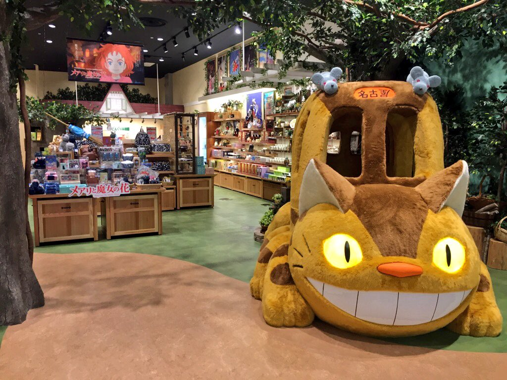
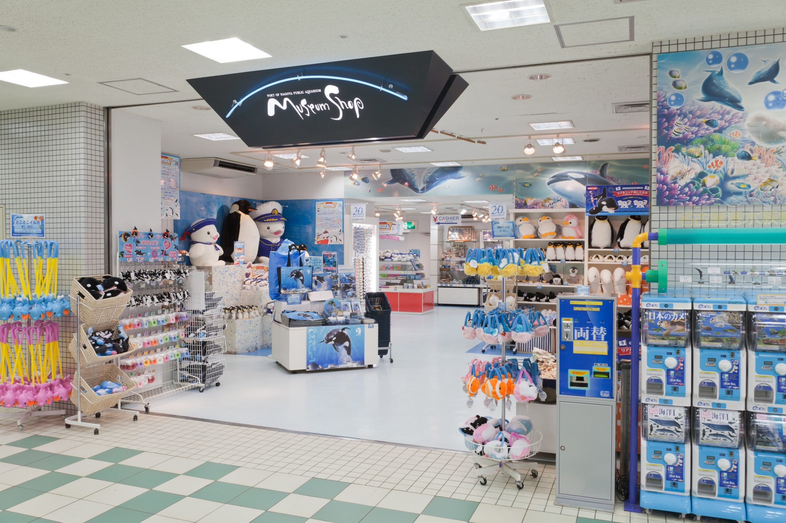
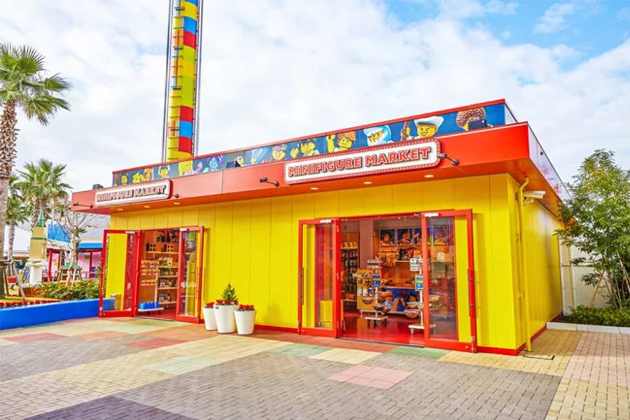
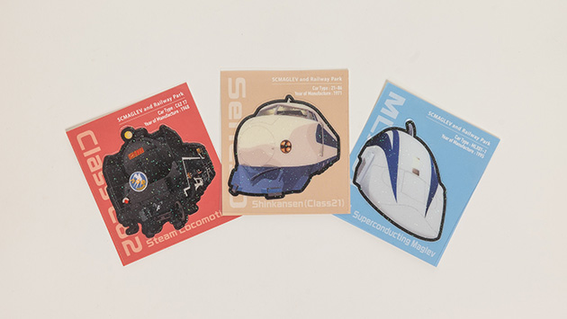
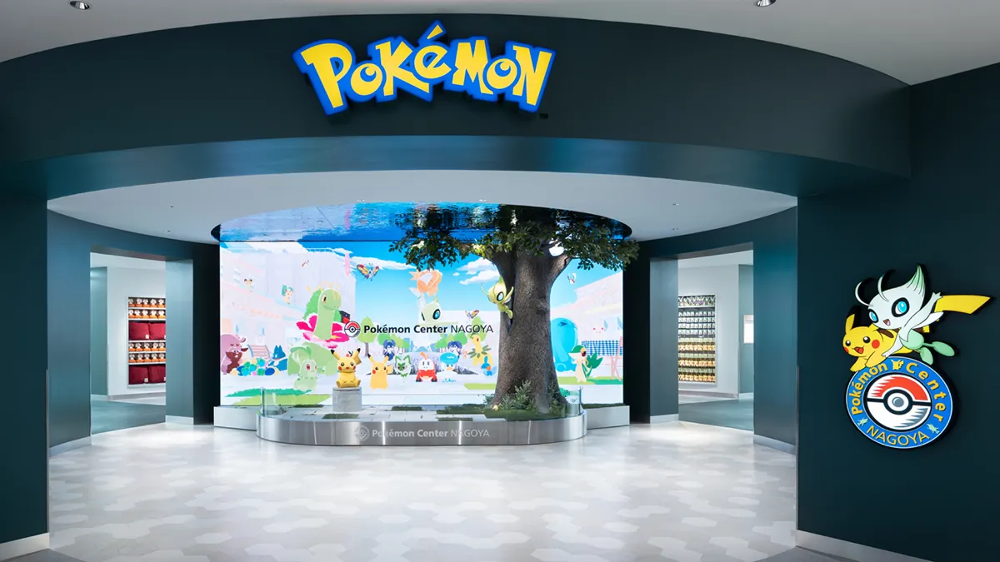

NOW여행 준비 중
TRIP AT A GLANCE
하루에 하나씩, 무리 없이
일정 보기 →
DAY 1 · 10/28 수요일
도착하는 날은 수족관 하나
인천 → 센트레아 → 호텔 → 나고야항 수족관
오늘의 기준 14:30 공연을 목표로 하되 입국이 늦어지면 15:30 돌고래 공연부터 본다.
✈️
인천 출발 · OZ122
09:55 센트레아 도착 예정
🧳
입국심사 · 수하물 · 화장실
아이들 컨디션을 보며 약 1시간 확보
μSKY로 나고야 이동
놓치면 무리하지 말고 다음 편 이용
中部国際空港 TA24→名鉄名古屋 NH36약 30분 · 전 좌석 지정
탑승 순서·표 사는 법 보기
- 표지 찾기도착층에서 빨간색 名鉄(메이테츠) 표지를 따라 공항역으로 이동
- 표 구입μSKY는 일반 승차권과 별도로 좌석 지정권인 μticket이 필요
- 열차 확인전광판에서 名鉄名古屋 정차 여부와 좌석 번호 확인
- 호텔 이동名鉄名古屋역 하차 후 JR Gate Tower 표지 방향으로 약 15분
🏨
호텔에 짐 맡기기
열차뷰 · Hollywood Twin · Bed Guard 요청 확인
🍜
나고야역에서 점심
빠르게 먹고 13:15 전후 출발
🐬
나고야항 수족관으로
사카에 경유보다 가나야마 환승이 간단
名古屋 → 金山JR 또는 메이테츠 · 약 4분↓ 환승名港線 金山 → 名古屋港 E07名古屋港행 · 3번 출구 · 도보 5분
환승 순서·방향 자세히 보기
- 나고야 → 가나야마JR 또는 메이테츠를 타고 金山에서 하차
- 지하철 환승보라색 名港線 표지를 따라 이동
- 행선지 확인반드시 名古屋港행 열차에 탑승
- 수족관 이동종점 名古屋港 E07, 3번 출구에서 도보 약 5분
↩️
호텔로 돌아가기
나고야항 → 가나야마 → 나고야
🛏️
체크인 · 휴식 · 가벼운 저녁
첫날은 여기서 종료. 나고야역 안에서 해결
DAY 2 · 10/29 목요일
레고랜드에 하루 집중
호텔 → 긴조후토 → LEGOLAND → 호텔
오늘의 기준 전부 타기보다 아이들이 고른 놀이기구 3개를 먼저. SEA LIFE는 제외.
🥐
조식 · 객실에서 준비
09:30 식사 종료 → 화장실·아이들 준비
아오나미선으로 출발
호텔에서 아오나미선 개찰구까지 10~15분
名古屋 AN01→金城ふ頭 AN11金城ふ頭행 · 종점 · 약 24분
개찰구부터 입구까지 순서 보기
- 개찰구 찾기나고야역에서 파란색 あおなみ線 표지를 따라 이동
- 행선지 확인金城ふ頭행 탑승, 중간 환승 없음
- 종점 하차金城ふ頭 AN11에서 하차
- 입구 이동보행데크의 LEGOLAND 표지를 따라 약 10분
↩️
나고야로 복귀
金城ふ頭 AN11 → 名古屋 AN01
🍽️
호텔 휴식 후 저녁
나고야역 안에서 컨디션에 맞춰 선택
🍰 아이가 케이크를 원하면 호텔 연결 Gate Tower Mall 4F HARBS. 매장 식사는 19:30 주문 마감, 포장은 20:00까지.
DAY 3 · 10/30 금요일
기차를 보고, 사카에의 밤으로
철도관 → 점심 → 호텔 휴식 → 쇼핑·야경
오늘의 기준 필수는 철도관·포켓몬센터·저녁. 그 뒤는 아이들 컨디션에 따라 하나씩 더한다.
🥐
조식 · 객실에서 준비
전날과 같은 리듬으로 10시 출발
🍱
점심 · 호텔 복귀
긴조후토에서 먹거나 나고야로 바로 돌아와 식사
😴
객실에서 제대로 쉬기
최소 45분 확보. 낮잠·화장실·짐 정리
⚡
야바초로 이동
PARCO 동관 2층 포켓몬센터부터 시작
桜通線 名古屋 S02 → 久屋大通 S05徳重 방면↓ 환승名城線 久屋大通 M06 → 矢場町 M04左回り · 栄/金山 방면
🍽️
사카에에서 저녁
관람차 전 식사. 몽벨은 시간 남을 때만
🚕
택시로 호텔 복귀
오늘은 지하철로 돌아가지 않기
DAY 4 · 10/31 토요일
가볍게 쇼핑하고 여유 있게 공항으로
호텔 → 노리타케·AEON → 호텔 → 센트레아 · Flight Park(선택)
오늘의 기준 Flight Park를 가면 12:40에 AEON을 나와 14:19보다 한 편 이른 μSKY를 탄다. 생략하면 기존 13:10 출발·14:19 열차.
🥐
마지막 조식 · 짐 정리
10:45 전후 체크아웃 후 호텔에 캐리어 보관
✈️
Flight Park를 갈 때만 일찍 출발
AEON 쇼핑을 30분 줄이고 호텔에서 짐을 찾은 뒤, 14:19보다 한 편 이른 μSKY 이용
정확한 열차 시각과 좌석은 출발 전날 메이테츠 공식 시간표에서 확인.
μSKY로 센트레아 이동
기본안은 14:47 공항 도착 · Flight Park 선택 시 한 편 일찍
名鉄名古屋 NH36→中部国際空港 TA24中部国際空港행 · 약 28분
출발 전날 토요일 시간표와 좌석을 최종 확인.
🛩️
FLIGHT OF DREAMS · Flight Park
실제 보잉 787을 가까이 보고 노는 실내 항공 체험 공간 · 0~12세 키즈존
1찾아가기공항역·Access Plaza에서 T2 방향으로 도보 약 5분
2짧고 굵게 놀기기본 입장 무료 · 3세부터 유료 네트 놀이 가능
3T1으로 돌아가기늦어도 15:40에는 출발 · 콕핏 대기가 길면 생략
운영 10:00~17:00. 네트 놀이는 3세~초등학생, 1일 ¥500이며 양말 필수. 공항 도착이 15:00을 넘거나 수속이 혼잡하면 바로 T1으로 이동.
FAMILY SHOPPING GUIDE
동선대로 보는 쇼핑 가이드
매장을 따로 찾아다니기보다 이미 가는 장소에서 산다. 아이들 물건은 사카에, 식품·생활용품은 나고야역과 노리타케, 빠뜨린 선물만 공항에서 보충하는 흐름이다.
SHOP ALONG THE WAY
사진으로 보는 일정별 쇼핑
따로 쇼핑하러 이동하지 않고, 관람을 마치는 지점에서 20~30분만 본다. 큰 인형과 세트는 부피를 먼저 확인하고 아이마다 고르는 개수를 정해두면 편하다.

공식 매장 안내 ↗🏨 매일 저녁 · 호텔 직결
JR Gate Tower
도토리공화국 · 빅카메라 · HARBS · 식품관- 아이 선물은 지브리 소품이나 토미카처럼 작은 것부터
- HARBS는 Mall 4F 카페, 다카시마야 B1은 포장 전용
케이크 추천10/29 복귀 후 4F에서 휴식 · 늦으면 B1 포장

공식 매장 안내 ↗🐬 10/28 수요일
나고야항 수족관
범고래·펭귄 인형, 키링, 문구, 과자- 남관 1층 출구 앞 매장이 가장 자연스러운 동선
- 큰 인형보다 작은 키링·문구가 이동하기 편함
추천 시점관람 종료 직전 16:20~16:40

공식 매장 안내 ↗🎢 10/29 목요일
LEGOLAND Japan
나만의 미니피겨 · 픽어브릭 · 작은 한정 굿즈- 미니피겨 마켓에서 5개 부품으로 한 명씩 만들기
- 큰 세트는 한국 가격과 수하물 부피를 먼저 비교
추천 시점미니피겨는 중간 · Big Shop은 퇴장 전 20~30분

공식 매장 안내 ↗🚄 10/30 금요일
리니어·철도관
전시 차량 스티커 · 키링 · 철도 문구 · 기차 도시락- 스티커·문구는 작고 나고야에서만 사기 좋은 기념품
- 닥터옐로·N700S 도시락은 용기를 가져올 때만 선택
추천 시점12:35 전후 · 점심과 퇴장 전에 한 번에

공식 매장 안내 ↗⚡ 10/30 금요일 오후
사카에·PARCO
포켓몬 · 커비 캐릭터 굿즈- 포켓몬센터는 PARCO 동관 2층부터 시작
- 구매 개수를 먼저 정하고 커비 매장은 시간 되면 방문
추천 시점16:00~17:10 · 같은 건물에서 한 번에
🌳 10/31 토요일
노리타케·AEON
식기 · 생활용품 · 식품 · 아이용품- 노리타케 식기는 포장과 수하물 무게부터 확인
- AEON에서 점심과 마지막 실용 쇼핑을 함께 해결
추천 시점11:10~13:10 · 출발 알람 필수
상품·가격·운영 여부는 바뀌거나 품절될 수 있으므로 현장 표시를 우선하세요.
호텔과 바로 연결
나고야역
멀리 이동하지 않고 선물과 필요한 물건을 한 번에 보기 좋은 안전한 선택.
- JR 나고야 다카시마야 B1·B2나고야 과자, 도시락, 식품 선물
- 도토리공화국 · Gate Tower Mall 1F토토로·지지 굿즈와 대형 네코버스 포토존 · 10:00~20:00
- Bic Camera · JR Gate Tower 9~10F토미카·실바니안·호빵맨 완구와 게임
- HARBS · Gate Tower Mall 4F케이크 카페 · 매장 10:00~20:00, 케이크·음료 주문 19:30까지
- HARBS 포장점 · 다카시마야 B1객실에서 먹고 싶을 때 · 포장 10:00~20:00
- GU·Hands옷, 문구, 여행용품이 필요할 때
10/30 금요일
사카에·PARCO
캐릭터 쇼핑은 한 건물에서 끝낸다. 먼저 고를 개수나 예산을 정하면 다음 일정이 밀리지 않는다.
- Pokémon Center · 동관 2F10:00~20:00 · 혼잡일에는 입장 공지 확인
- KIRBY’S PUPUPU MARKET · 동관 3FKIDDY LAND 안 상설 코너 · 면세 대상 외
- Standard Products · SKYLE 7FPARCO 쇼핑이 길어지면 생략하는 선택 코스
가족 쇼핑 규칙아이마다 ‘큰 것 1개 또는 작은 것 2개’처럼 기준을 먼저 정하기
10/31 토요일
노리타케·AEON
귀국일의 메인 쇼핑. 13:10 출발 알람을 먼저 설정하고, 부피 큰 물건은 수하물 여유를 확인한다.
- Noritake Square Nagoya일상 식기부터 노리타케·오쿠라 도엔 제품
- AEON MALL식품·생활용품·아이 물건을 한 장소에서 비교
- 식사와 쇼핑 함께점심을 따로 이동하지 않아 귀국 동선이 단순함
10/31 출국 전
센트레아 T1
시내에서 못 산 선물만 보충한다. 국제선 제한구역 매장은 항공편에 따라 영업시간이 달라질 수 있다.
- 3F 센트레아 특산품관·오미야게관도카이 지역 과자·명산품·잡화
- 4F SORA MONO공항 오리지널·비행기 캐릭터 상품
- 출국심사 뒤 면세점화장품·주류·일본 과자, 당일 영업 여부 확인
18:20 출발편이므로 시내 구매를 기본으로 하고, 공항 매장은 당일 운영시간을 확인.
FROM THE REFERENCE
우리 가족 쇼핑 후보
가격·재고는 넣지 않고, 이미지에서 눈여겨볼 품목만 정리했어요.FAMILY FIELD TOOLS
현장에서 쓰는 가족 도구
체크 상태와 메모는 이 기기의 브라우저에만 저장됩니다.
✅
0 / 15TRIP CHECKLIST
가족 체크리스트
📝
LOCAL NOTE
현장 메모
📲
OFFLINE READY
홈 화면 설치
오프라인 준비 상태를 확인하고 있습니다.
iPhone·iPad
Safari의 공유 버튼 → ‘홈 화면에 추가’
Android
Chrome 메뉴 → ‘홈 화면에 추가’ 또는 ‘앱 설치’
🗺️
SHARED GOOGLE MAP
공유받은 나고야 지도 · 36곳
🆘
EMERGENCY CARD
긴급 도움 카드
🚓 경찰110범죄·사고 긴급 신고
🚑 구급·소방119응급환자·화재
🇰🇷 JNTO 여행자 핫라인050-3816-278724시간 · 한국어 지원
🏨 JR Gate Tower Hotel052-566-2111프런트 · 15층
名古屋JRゲートタワーホテル
지도 열기〒450-6660 愛知県名古屋市中村区名駅1-1-3
나고야 JR 게이트 타워 호텔 · 메이에키 1-1-3QUICK REFERENCE
현장에서 바로 보는 교통표
공항 왕복
센트레아 TA24 ↔ 메이테츠 나고야 NH36
레고랜드·철도관
나고야 AN01 ↔ 긴조후토 AN11
수족관
가나야마 환승 → 나고야항 E07
사카에 쇼핑
나고야 S02 → 히사야오도리 S05 → 야바초 M04
TAP TO SPEAK
여행 일본어 회화 수첩
일본어 문장을 크게 보여주거나 발음 듣기를 누르세요. 한글 발음은 편하게 읽기 위한 근사 표기이며, 음성은 휴대폰에 설치된 일본어 음성을 사용해 기기마다 조금 다르게 들릴 수 있습니다.
✈️ 공항에서
チェックインカウンターはどこですか？
쳇쿠인 카운타아와 도코데스카?
체크인 카운터는 어디인가요?
この荷物を預けたいです。
코노 니모츠오 아즈케타이데스.
이 짐을 맡기고 싶습니다.
子どもと一緒に座れますか？
코도모토 잇쇼니 스와레마스카?
아이와 함께 앉을 수 있나요?
搭乗口はどこですか？
토오조오구치와 도코데스카?
탑승구는 어디인가요?
ベビーカーは預けられますか？
베비이카아와 아즈케라레마스카?
유모차를 맡길 수 있나요?
🍽️ 식당에서
四人です。大人二人、子ども二人です。
요닌데스. 오토나 후타리, 코도모 후타리데스.
네 명입니다. 어른 두 명, 아이 두 명입니다.
子ども用の椅子はありますか？
코도모요오노 이스와 아리마스카?
어린이용 의자가 있나요?
辛くないものはありますか？
카라쿠나이 모노와 아리마스카?
맵지 않은 음식이 있나요?
お会計をお願いします。
오카이케이오 오네가이시마스.
계산 부탁드립니다.
子ども用の食器をお願いします。
코도모요오노 쇽키오 오네가이시마스.
어린이용 식기를 부탁드립니다.
お水を四つください。
오미즈오 욧츠 쿠다사이.
물 네 잔 주세요.
これは何が入っていますか？
코레와 나니가 하잇테이마스카?
여기에는 무엇이 들어 있나요?
🚇 지하철·기차에서
この電車は名古屋港に行きますか？
코노 덴샤와 나고야코오니 이키마스카?
이 전철은 나고야항에 가나요?
金城ふ頭行きはどのホームですか？
킨조오후토 이키와 도노 호오무데스카?
긴조후토행은 어느 승강장인가요?
ここで乗り換えますか？
코코데 노리카에마스카?
여기에서 갈아타나요?
エレベーターはどこですか？
에레베에타아와 도코데스카?
엘리베이터는 어디인가요?
名鉄名古屋駅はどちらですか？
메이테츠 나고야에키와 도치라데스카?
메이테츠 나고야역은 어느 쪽인가요?
この切符で乗れますか？
코노 킷푸데 노레마스카?
이 표로 탈 수 있나요?
次の駅はどこですか？
츠기노 에키와 도코데스카?
다음 역은 어디인가요?
🏨 호텔에서
予約しています。
요야쿠 시테이마스.
예약했습니다.
荷物を預かってください。
니모츠오 아즈캇테 쿠다사이.
짐을 맡아 주세요.
ベッドガードをお願いします。
벳도 가아도오 오네가이시마스.
침대 가드를 부탁드립니다.
タオルを二枚追加してください。
타오루오 니마이 츠이카시테 쿠다사이.
수건 두 장을 추가해 주세요.
チェックアウトは何時ですか？
쳇쿠아우토와 난지데스카?
체크아웃은 몇 시인가요?
🛍️ 쇼핑할 때
これをください。
코레오 쿠다사이.
이것을 주세요.
免税できますか？
멘제이 데키마스카?
면세가 가능한가요?
別のサイズはありますか？
베츠노 사이즈와 아리마스카?
다른 사이즈가 있나요?
袋を一枚ください。
후쿠로오 이치마이 쿠다사이.
봉투 한 장 주세요.
クレジットカードは使えますか？
쿠레짓토 카아도와 츠카에마스카?
신용카드를 사용할 수 있나요?
🆘 긴급·도움이 필요할 때
子どもが迷子になりました。助けてください。
코도모가 마이고니 나리마시타. 타스케테 쿠다사이.
아이가 길을 잃었습니다. 도와주세요.
トイレはどこですか？
토이레와 도코데스카?
화장실은 어디인가요?
子どもの気分が悪いです。
코도모노 키분가 와루이데스.
아이의 몸 상태가 좋지 않습니다.
薬局はどこですか？
야쿄쿠와 도코데스카?
약국은 어디인가요?
救急車を呼んでください。
큐우큐우샤오 욘데 쿠다사이.
구급차를 불러 주세요.
日本語がわかりません。ゆっくりお願いします。
니혼고가 와카리마센. 윳쿠리 오네가이시마스.
일본어를 모르겠습니다. 천천히 부탁드립니다.